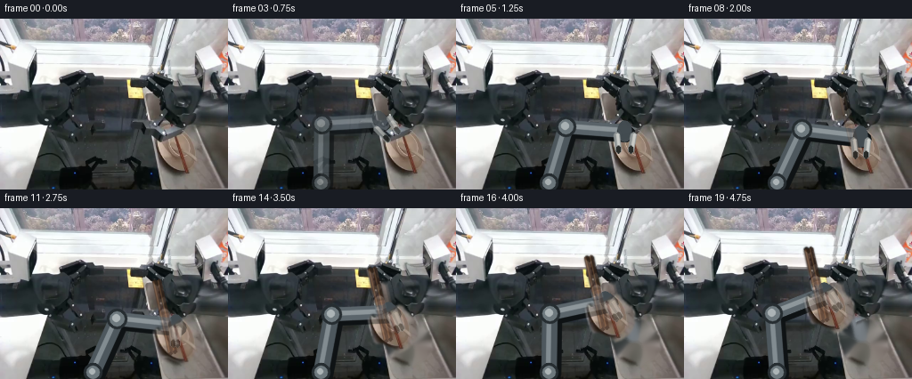
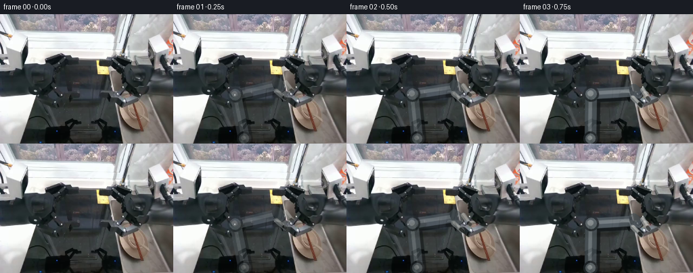

CODING AGENTS AS PIXEL WORLD MODELS
traex/GPT-5.6-Sol · common50_0004
点击播放 · 原生 RGB 像素
逐轮保存的候选
回放视频、检查图与代码变化。
每份候选均可单独播放。实际图片检查记录在下方工具轨迹中。
候选 01播放与检查图
点击播放 · 原生 RGB 像素


展开代码变化
--- 上一保存版本
+++ 本次保存版本
@@ -0,0 +1,174 @@
+from pathlib import Path
+import math
+import cv2
+import numpy as np
+from PIL import Image
+import artifact_io
+
+ROOT = Path(__file__).resolve().parent
+src = np.asarray(Image.open(ROOT / "first_frame.png").convert("RGB"), dtype=np.uint8)
+H, W = src.shape[:2]
+
+
+def smoothstep(x):
+ x = min(1.0, max(0.0, float(x)))
+ return x*x*(3.0-2.0*x)
+
+
+def alpha_over(base, layer, alpha):
+ a = np.clip(alpha, 0, 1)[..., None].astype(np.float32)
+ return np.clip(base.astype(np.float32)*(1-a) + layer.astype(np.float32)*a, 0, 255).astype(np.uint8)
+
+
+def line_mask(p0, p1, width):
+ m = np.zeros((H, W), np.uint8)
+ cv2.line(m, tuple(map(int,p0)), tuple(map(int,p1)), 255, int(width), cv2.LINE_AA)
+ return m
+
+# Isolate the warm crockery already visible in the right sink. This is computed
+# solely from the supplied RGB frame, then expanded slightly to retain its real edges.
+r,g,b = [src[...,i].astype(np.int16) for i in range(3)]
+warm = ((r-b > 13) & (r-g > 4) & (r > 58)).astype(np.uint8)
+roi = np.zeros_like(warm); roi[124:179, 171:228] = 1
+warm &= roi
+warm = cv2.morphologyEx(warm, cv2.MORPH_CLOSE, np.ones((5,5),np.uint8), iterations=2)
+n, labels, stats, cents = cv2.connectedComponentsWithStats(warm, 8)
+obj_core = np.zeros_like(warm)
+for i in range(1,n):
+ x,y,w,h,a = stats[i]
+ if a > 35:
+ obj_core[labels==i] = 1
+obj_core = cv2.dilate(obj_core, np.ones((5,5),np.uint8), iterations=1)
+# Limit to the round bowl/plate group; softly retain their real photographic texture.
+yy,xx=np.mgrid[:H,:W]
+support = (((xx-200)/29.0)**2 + ((yy-151)/28.0)**2 < 1.0)
+obj_core = (obj_core.astype(bool) & support).astype(np.uint8)*255
+obj_alpha = cv2.GaussianBlur(obj_core,(0,0),1.15).astype(np.float32)/255.0
+
+# The two brown chopsticks run down the upper-left side of that crockery.
+stick_mask = np.maximum(line_mask((175,84),(193,165),5), line_mask((180,83),(198,163),4))
+stick_alpha = cv2.GaussianBlur(stick_mask,(0,0),0.75).astype(np.float32)/255.0
+all_alpha = np.maximum(obj_alpha, stick_alpha)
+
+# Clean plate/bowl/chopstick locations for the background revealed during lifting.
+inpaint_mask = (all_alpha > .08).astype(np.uint8)*255
+inpaint_mask = cv2.dilate(inpaint_mask,np.ones((3,3),np.uint8),iterations=1)
+bgr = cv2.cvtColor(src,cv2.COLOR_RGB2BGR)
+clean_bg = cv2.cvtColor(cv2.inpaint(bgr,inpaint_mask,5,cv2.INPAINT_TELEA),cv2.COLOR_BGR2RGB)
+
+
+def shift_layer(image, alpha, dx, dy):
+ M=np.float32([[1,0,dx],[0,1,dy]])
+ li=cv2.warpAffine(image,M,(W,H),flags=cv2.INTER_LINEAR,borderMode=cv2.BORDER_CONSTANT,borderValue=0)
+ la=cv2.warpAffine(alpha.astype(np.float32),M,(W,H),flags=cv2.INTER_LINEAR,borderMode=cv2.BORDER_CONSTANT,borderValue=0)
+ return li,la
+
+
+def ik(anchor, target, L1=66.0, L2=66.0):
+ a=np.array(anchor,float); p=np.array(target,float); v=p-a
+ d=np.linalg.norm(v); d=max(abs(L1-L2)+.01,min(L1+L2-.01,d))
+ u=v/(np.linalg.norm(v)+1e-8); perp=np.array([-u[1],u[0]])
+ along=(L1*L1-L2*L2+d*d)/(2*d)
+ height=math.sqrt(max(0,L1*L1-along*along))
+ # The left/high elbow solution keeps links clear of the right basin.
+ e=a+along*u-height*perp
+ return tuple(e)
+
+
+def capsule(img,p0,p1,color,width):
+ p0=tuple(np.round(p0).astype(int)); p1=tuple(np.round(p1).astype(int))
+ cv2.line(img,p0,p1,color,width,cv2.LINE_AA)
+ cv2.circle(img,p0,width//2,color,-1,cv2.LINE_AA)
+ cv2.circle(img,p1,width//2,color,-1,cv2.LINE_AA)
+
+
+def render_robot(base, palm, jaw_sep, opacity):
+ """Draw a rigid, two-link left arm; only its revolute joints articulate."""
+ layer=base.copy()
+ anchor=np.array((104.0,184.0)); palm=np.array(palm,float); elbow=np.array(ik(anchor,palm))
+ # soft contact shadow followed by fixed-width, cool-metal links
+ capsule(layer,anchor+(3,3),elbow+(3,3),(15,19,21),19)
+ capsule(layer,elbow+(3,3),palm+(3,3),(14,18,20),17)
+ capsule(layer,anchor,elbow,(78,88,94),16)
+ capsule(layer,elbow,palm,(91,101,107),14)
+ capsule(layer,anchor+(-1,-1),elbow+(-1,-1),(130,140,145),3)
+ capsule(layer,elbow+(-1,-1),palm+(-1,-1),(142,151,155),3)
+ # Completely circular, non-deforming revolute housings.
+ for q,rad in ((anchor,10),(elbow,11),(palm,8)):
+ cv2.circle(layer,tuple(np.round(q).astype(int)),rad,(38,45,49),-1,cv2.LINE_AA)
+ cv2.circle(layer,tuple(np.round(q).astype(int)),rad-3,(110,121,126),-1,cv2.LINE_AA)
+ cv2.circle(layer,tuple(np.round(q-1).astype(int)),max(2,rad-7),(172,180,182),-1,cv2.LINE_AA)
+ # Tool direction points toward the articles while approaching, then remains vertical.
+ center=np.array((200.0,151.0))
+ vec=center-palm
+ if np.linalg.norm(vec)<7: vec=np.array((0.,1.))
+ d=vec/(np.linalg.norm(vec)+1e-8)
+ # Near/after contact, maintain a stable downward tool axis.
+ if palm[1] > 119 or palm[0] > 187: d=np.array((0.,1.))
+ nvec=np.array((-d[1],d[0]))
+ # wrist block
+ capsule(layer,palm-5*d,palm+5*d,(66,75,80),13)
+ # Identical rigid fingers pivot inward; no geometry changes except separation.
+ for side in (-1,1):
+ root=palm+4*d+side*(jaw_sep*.5)*nvec
+ tip=palm+22*d+side*(jaw_sep*.38)*nvec
+ capsule(layer,root,tip,(145,151,151),5)
+ capsule(layer,root-1*nvec,tip-1*nvec,(203,205,201),2)
+ # dark rubber grasp pad
+ capsule(layer,tip-4*d,tip+1*d,(39,42,40),3)
+ return alpha_over(base,layer,np.full((H,W),opacity,np.float32))
+
+
+def draw_shifted_sticks(frame, dx, dy, strength=1.0):
+ # Reinforce the narrow real-pixel layers with restrained brown specular edges.
+ over=frame.copy()
+ c0=np.array((175+dx,84+dy)); c1=np.array((193+dx,165+dy))
+ d0=np.array((180+dx,83+dy)); d1=np.array((198+dx,163+dy))
+ for a,z in ((c0,c1),(d0,d1)):
+ cv2.line(over,tuple(a.astype(int)),tuple(z.astype(int)),(76,48,34),3,cv2.LINE_AA)
+ cv2.line(over,tuple((a+[-1,0]).astype(int)),tuple((z+[-1,0]).astype(int)),(145,99,66),1,cv2.LINE_AA)
+ cv2.circle(over,tuple(z.astype(int)),2,(54,34,26),-1,cv2.LINE_AA)
+ return alpha_over(frame,over,np.full((H,W),.55*strength,np.float32))
+
+frames=[]
+for i in range(20):
+ if i==0:
+ frames.append(src.copy()); continue
+ # 0-7: controlled reach. 8-10: close. 11-19: stable lift toward upper-left.
+ if i<=7:
+ u=smoothstep(i/7.0)
+ palm=(153+(198-153)*u, 102+(132-102)*u)
+ jaws=19.0
+ lift=0.0
+ elif i<=10:
+ u=smoothstep((i-7)/3.0)
+ palm=(198.0,132.0)
+ jaws=19.0+(7.0-19.0)*u
+ lift=0.0
+ else:
+ lift=smoothstep((i-10)/9.0)
+ palm=(198+(160-198)*lift,132+(94-132)*lift)
+ jaws=7.0
+ dx=-38.0*lift; dy=-38.0*lift
+ if lift>0:
+ # Remove articles at their former location, then translate every article by
+ # one common affine transform: rigid group motion, with no stretching.
+ frame=alpha_over(src,clean_bg,all_alpha)
+ else:
+ frame=src.copy()
+ # Robot is behind the held crockery but its jaw pads remain visually on top.
+ visibility=min(1.0, .28+.14*i)
+ frame=render_robot(frame,palm,jaws,visibility)
+ if lift>0:
+ moved,ma=shift_layer(src,all_alpha,dx,dy)
+ frame=alpha_over(frame,moved,ma)
+ frame=draw_shifted_sticks(frame,dx,dy,1.0)
+ # Repaint the gripper at modest opacity so jaws visibly retain the load.
+ frame=render_robot(frame,palm,jaws,.42)
+ elif i>=7:
+ frame=draw_shifted_sticks(frame,0,0,.35)
+ frames.append(frame)
+
+frames=np.stack(frames).astype(np.uint8)
+assert np.array_equal(frames[0],src)
+artifact_io.save(frames,ROOT)
可观测工具轨迹
实际执行的命令与返回图片。
命令 1exit 0
/bin/bash -lc "cat GENERATION_RULES.md && printf '\\n---PROMPT---\\n' && cat prompt.txt"
命令 2exit 127
/bin/bash -lc "find . -maxdepth 2 -type f -printf '%p %s bytes\\n' | sort && file first_frame.png"
命令 3exit 0
/bin/bash -lc "cat task_spec.json && sed -n '1,240p' artifact_io.py"
命令 4exit 0
/bin/bash -lc "python3 - <<'PY'
from PIL import Image
import numpy as np
im=np.array(Image.open('first_frame.png').convert('RGB'))
print(im.shape,im.dtype, im.min(), im.max())
for y in range(0,192,24):
print('row',y, [tuple(im[y,x]) for x in range(0,256,32)])
# luminance/color ascii 64x48
small=np.array(Image.fromarray(im).resize((64,48)))
# ANSI colored background blocks perhaps logs raw escapes? output hex class nearest palette
pal=np.array([[0,0,0],[255,255,255],[128,128,128],[160,100,50],[210,190,150],[80,100,120],[120,140,100],[180,180,180]])
ch='KWGBETSO'
d=((small[:,:,None,:].astype(int)-pal[None,None,:,:])**2).sum(3)
for row in d.argmin(2): print(''.join(ch[i] for i in row))
PY"命令 5exit 0
/bin/bash -lc "python3 - <<'PY'
import cv2, numpy as np
from PIL import Image
im=cv2.imread('first_frame.png')[:,:,::-1]
# kmeans Lab 12
lab=cv2.cvtColor(im,cv2.COLOR_RGB2LAB).reshape(-1,3).astype(np.float32)
_,lb,cen=cv2.kmeans(lab,14,None,(cv2.TERM_CRITERIA_EPS+cv2.TERM_CRITERIA_MAX_ITER,50,.1),10,cv2.KMEANS_PP_CENTERS)
cenrgb=cv2.cvtColor(cen.astype(np.uint8)[None],cv2.COLOR_LAB2RGB)[0]
counts=np.bincount(lb[:,0],minlength=14)
order=np.argsort(-(counts))
print('clusters')
for i in order: print(i,counts[i],cenrgb[i])
labels=lb.reshape(192,256)
# downsample labels mode 2x2 into map; assign chars based order
chars='0123456789ABCD'
for yy in range(0,192,4):
row=''
for xx in range(0,256,4):
z=labels[yy:yy+4,xx:xx+4].ravel(); m=np.bincount(z,minlength=14).argmax(); row+=chars[m]
print(row)
PY"命令 6exit 0
/bin/bash -lc "python3 - <<'PY'
import cv2,numpy as np
from PIL import Image
im=np.array(Image.open('first_frame.png').convert('RGB')); R,G,B=im.transpose(2,0,1)
masks={
'beige':(R>130)&(R>G*1.02)&(G>B*1.05)&((R.astype(int)-B)>15),
'brown':(R>50)&(R>G*1.12)&(G>B*.85)&((R.astype(int)-B)>18),
'bright':(R>210)&(G>210)&(B>190),
'red':(R>G*1.25)&(R>B*1.2)&(R>70),
'yellow':(R>160)&(G>130)&(B<130),
}
for name,m in masks.items():
n,l,st,cent=cv2.connectedComponentsWithStats(m.astype('uint8'),8)
print('\\n',name,m.sum())
for i in np.argsort(st[1:,4])[::-1][:15]+1:
x,y,w,h,a=st[i];print(a,(x,y,w,h),np.round(cent[i],1))
# grid presence count 8x8
for y in range(0,192,8):
print(''.join(' .:+*#'[min(5,int(m[y:y+8,x:x+8].sum()//10))] for x in range(0,256,8)))
PY"命令 7exit 0
/bin/bash -lc "python3 - <<'PY'
import cv2,numpy as np
im=cv2.imread('first_frame.png')
g=cv2.cvtColor(im,cv2.COLOR_BGR2GRAY)
print('LINES')
e=cv2.Canny(g,80,160)
lines=cv2.HoughLinesP(e,1,np.pi/180,threshold=18,minLineLength=12,maxLineGap=4)
for q in sorted(lines[:,0].tolist(),key=lambda q:-((q[2]-q[0])**2+(q[3]-q[1])**2))[:80]:
x1,y1,x2,y2=q; print(q,'len',round(np.hypot(x2-x1,y2-y1),1),'ang',round(np.degrees(np.arctan2(y2-y1,x2-x1)),1))
print('CIRCLES')
for p in [(1.2,15,10,3,35),(1,10,8,2,25)]:
cs=cv2.HoughCircles(g,cv2.HOUGH_GRADIENT,dp=p[0],minDist=p[1],param1=100,param2=p[2],minRadius=p[3],maxRadius=p[4])
if cs is not None:
print(np.round(cs[0]).astype(int).tolist()[:100])
PY"命令 8exit 0
/bin/bash -lc "command -v chafa || command -v viu || command -v jp2 || command -v img2txt || command -v python3; python3 - <<'PY'
from PIL import Image
import numpy as np
im=np.array(Image.open('first_frame.png').convert('RGB'))
# output 128x96 ansi truecolor halfblock (top/bottom), perhaps UI renderer captures colors
im=np.array(Image.fromarray(im).resize((128,96)))
for y in range(0,96,2):
s=''
for x in range(128):
a=im[y,x];b=im[y+1,x]
s+=f'\\x1b[38;2;{a[0]};{a[1]};{a[2]}m\\x1b[48;2;{b[0]};{b[1]};{b[2]}mâ'
print(s+'\\x1b[0m')
PY"命令 9exit 0
/bin/bash -lc "python3 - <<'PY'
from PIL import Image
import numpy as np
im=np.array(Image.open('first_frame.png').convert('RGB'))
# print horizontal runs classes every 2 px using semantic color bins
# bright W >200, mid M, dark D, black K, beige E, redbrown R, bluish C
for y in range(0,192,4):
s=''
for x in range(0,256,2):
a=im[y:y+4,x:x+2].mean((0,1)); r,g,b=a
if min(a)>215:c='W'
elif r>1.13*b and r>1.05*g and r>80:c='R'
elif min(a)>165:c='L'
elif min(a)>115:c='m'
elif max(a)<25:c='K'
elif max(a)<55:c='d'
elif max(a)<90:c='D'
else:c='o'
s+=c
# run encode
runs=[]; st=0
for i in range(1,len(s)+1):
if i==len(s) or s[i]"'!=s[st]:
if i-st>=2:runs.append(f'"'{st*2}-{i*2}:{s[st]}')
st=i
print(f'y{y:03}', ' '.join(runs))
PY"命令 10exit 0
/bin/bash -lc "python3 - <<'PY'
from PIL import Image
import numpy as np
im=np.array(Image.open('first_frame.png').convert('RGB'))
for y in range(48,192,2):
s=''
for x in range(128,256,2):
r,g,b=im[y:y+2,x:x+2].mean((0,1)); mx=max(r,g,b);mn=min(r,g,b); lum=(r+g+b)/3
if r-g>15 and r-b>20 and r>70: c='R' # brown beige
elif r-b>10 and r>90:c='e'
elif b-r>12:c='c'
elif lum>225:c='W'
elif lum>180:c='L'
elif lum>140:c='m'
elif lum>100:c='o'
elif lum>70:c='D'
elif lum>45:c='d'
elif lum>25:c='k'
else:c='K'
s+=c
print(f'{y:03} {s}')
PY"命令 11exit 0
/bin/bash -lc "cat > generate.py <<'PY'
from pathlib import Path
import math
import cv2
import numpy as np
from PIL import Image
import artifact_io
ROOT = Path(__file__).resolve().parent
src = np.asarray(Image.open(ROOT / \"first_frame.png\").convert(\"RGB\"), dtype=np.uint8)
H, W = src.shape[:2]
def smoothstep(x):
x = min(1.0, max(0.0, float(x)))
return x*x*(3.0-2.0*x)
def alpha_over(base, layer, alpha):
a = np.clip(alpha, 0, 1)[..., None].astype(np.float32)
return np.clip(base.astype(np.float32)*(1-a) + layer.astype(np.float32)*a, 0, 255).astype(np.uint8)
def line_mask(p0, p1, width):
m = np.zeros((H, W), np.uint8)
cv2.line(m, tuple(map(int,p0)), tuple(map(int,p1)), 255, int(width), cv2.LINE_AA)
return m
# Isolate the warm crockery already visible in the right sink. This is computed
# solely from the supplied RGB frame, then expanded slightly to retain its real edges.
r,g,b = [src[...,i].astype(np.int16) for i in range(3)]
warm = ((r-b > 13) & (r-g > 4) & (r > 58)).astype(np.uint8)
roi = np.zeros_like(warm); roi[124:179, 171:228] = 1
warm &= roi
warm = cv2.morphologyEx(warm, cv2.MORPH_CLOSE, np.ones((5,5),np.uint8), iterations=2)
n, labels, stats, cents = cv2.connectedComponentsWithStats(warm, 8)
obj_core = np.zeros_like(warm)
for i in range(1,n):
x,y,w,h,a = stats[i]
if a > 35:
obj_core[labels==i] = 1
obj_core = cv2.dilate(obj_core, np.ones((5,5),np.uint8), iterations=1)
# Limit to the round bowl/plate group; softly retain their real photographic texture.
yy,xx=np.mgrid[:H,:W]
support = (((xx-200)/29.0)**2 + ((yy-151)/28.0)**2 < 1.0)
obj_core = (obj_core.astype(bool) & support).astype(np.uint8)*255
obj_alpha = cv2.GaussianBlur(obj_core,(0,0),1.15).astype(np.float32)/255.0
# The two brown chopsticks run down the upper-left side of that crockery.
stick_mask = np.maximum(line_mask((175,84),(193,165),5), line_mask((180,83),(198,163),4))
stick_alpha = cv2.GaussianBlur(stick_mask,(0,0),0.75).astype(np.float32)/255.0
all_alpha = np.maximum(obj_alpha, stick_alpha)
# Clean plate/bowl/chopstick locations for the background revealed during lifting.
inpaint_mask = (all_alpha > .08).astype(np.uint8)*255
inpaint_mask = cv2.dilate(inpaint_mask,np.ones((3,3),np.uint8),iterations=1)
bgr = cv2.cvtColor(src,cv2.COLOR_RGB2BGR)
clean_bg = cv2.cvtColor(cv2.inpaint(bgr,inpaint_mask,5,cv2.INPAINT_TELEA),cv2.COLOR_BGR2RGB)
def shift_layer(image, alpha, dx, dy):
M=np.float32([[1,0,dx],[0,1,dy]])
li=cv2.warpAffine(image,M,(W,H),flags=cv2.INTER_LINEAR,borderMode=cv2.BORDER_CONSTANT,borderValue=0)
la=cv2.warpAffine(alpha.astype(np.float32),M,(W,H),flags=cv2.INTER_LINEAR,borderMode=cv2.BORDER_CONSTANT,borderValue=0)
return li,la
def ik(anchor, target, L1=66.0, L2=66.0):
a=np.array(anchor,float); p=np.array(target,float); v=p-a
d=np.linalg.norm(v); d=max(abs(L1-L2)+.01,min(L1+L2-.01,d))
u=v/(np.linalg.norm(v)+1e-8); perp=np.array([-u[1],u[0]])
along=(L1*L1-L2*L2+d*d)/(2*d)
height=math.sqrt(max(0,L1*L1-along*along))
# The left/high elbow solution keeps links clear of the right basin.
e=a+along*u-height*perp
return tuple(e)
def capsule(img,p0,p1,color,width):
p0=tuple(np.round(p0).astype(int)); p1=tuple(np.round(p1).astype(int))
cv2.line(img,p0,p1,color,width,cv2.LINE_AA)
cv2.circle(img,p0,width//2,color,-1,cv2.LINE_AA)
cv2.circle(img,p1,width//2,color,-1,cv2.LINE_AA)
def render_robot(base, palm, jaw_sep, opacity):
\"\"\"Draw a rigid, two-link left arm; only its revolute joints articulate.\"\"\"
layer=base.copy()
anchor=np.array((104.0,184.0)); palm=np.array(palm,float); elbow=np.array(ik(anchor,palm))
# soft contact shadow followed by fixed-width, cool-metal links
capsule(layer,anchor+(3,3),elbow+(3,3),(15,19,21),19)
capsule(layer,elbow+(3,3),palm+(3,3),(14,18,20),17)
capsule(layer,anchor,elbow,(78,88,94),16)
capsule(layer,elbow,palm,(91,101,107),14)
capsule(layer,anchor+(-1,-1),elbow+(-1,-1),(130,140,145),3)
capsule(layer,elbow+(-1,-1),palm+(-1,-1),(142,151,155),3)
# Completely circular, non-deforming revolute housings.
for q,rad in ((anchor,10),(elbow,11),(palm,8)):
cv2.circle(layer,tuple(np.round(q).astype(int)),rad,(38,45,49),-1,cv2.LINE_AA)
cv2.circle(layer,tuple(np.round(q).astype(int)),rad-3,(110,121,126),-1,cv2.LINE_AA)
cv2.circle(layer,tuple(np.round(q-1).astype(int)),max(2,rad-7),(172,180,182),-1,cv2.LINE_AA)
# Tool direction points toward the articles while approaching, then remains vertical.
center=np.array((200.0,151.0))
vec=center-palm
if np.linalg.norm(vec)<7: vec=np.array((0.,1.))
d=vec/(np.linalg.norm(vec)+1e-8)
# Near/after contact, maintain a stable downward tool axis.
if palm[1] > 119 or palm[0] > 187: d=np.array((0.,1.))
nvec=np.array((-d[1],d[0]))
# wrist block
capsule(layer,palm-5*d,palm+5*d,(66,75,80),13)
# Identical rigid fingers pivot inward; no geometry changes except separation.
for side in (-1,1):
root=palm+4*d+side*(jaw_sep*.5)*nvec
tip=palm+22*d+side*(jaw_sep*.38)*nvec
capsule(layer,root,tip,(145,151,151),5)
capsule(layer,root-1*nvec,tip-1*nvec,(203,205,201),2)
# dark rubber grasp pad
capsule(layer,tip-4*d,tip+1*d,(39,42,40),3)
return alpha_over(base,layer,np.full((H,W),opacity,np.float32))
def draw_shifted_sticks(frame, dx, dy, strength=1.0):
# Reinforce the narrow real-pixel layers with restrained brown specular edges.
over=frame.copy()
c0=np.array((175+dx,84+dy)); c1=np.array((193+dx,165+dy))
d0=np.array((180+dx,83+dy)); d1=np.array((198+dx,163+dy))
for a,z in ((c0,c1),(d0,d1)):
cv2.line(over,tuple(a.astype(int)),tuple(z.astype(int)),(76,48,34),3,cv2.LINE_AA)
cv2.line(over,tuple((a+[-1,0]).astype(int)),tuple((z+[-1,0]).astype(int)),(145,99,66),1,cv2.LINE_AA)
cv2.circle(over,tuple(z.astype(int)),2,(54,34,26),-1,cv2.LINE_AA)
return alpha_over(frame,over,np.full((H,W),.55*strength,np.float32))
frames=[]
for i in range(20):
if i==0:
frames.append(src.copy()); continue
# 0-7: controlled reach. 8-10: close. 11-19: stable lift toward upper-left.
if i<=7:
u=smoothstep(i/7.0)
palm=(153+(198-153)*u, 102+(132-102)*u)
jaws=19.0
lift=0.0
elif i<=10:
u=smoothstep((i-7)/3.0)
palm=(198.0,132.0)
jaws=19.0+(7.0-19.0)*u
lift=0.0
else:
lift=smoothstep((i-10)/9.0)
palm=(198+(160-198)*lift,132+(94-132)*lift)
jaws=7.0
dx=-38.0*lift; dy=-38.0*lift
if lift>0:
# Remove articles at their former location, then translate every article by
# one common affine transform: rigid group motion, with no stretching.
frame=alpha_over(src,clean_bg,all_alpha)
else:
frame=src.copy()
# Robot is behind the held crockery but its jaw pads remain visually on top.
visibility=min(1.0, .28+.14*i)
frame=render_robot(frame,palm,jaws,visibility)
if lift>0:
moved,ma=shift_layer(src,all_alpha,dx,dy)
frame=alpha_over(frame,moved,ma)
frame=draw_shifted_sticks(frame,dx,dy,1.0)
# Repaint the gripper at modest opacity so jaws visibly retain the load.
frame=render_robot(frame,palm,jaws,.42)
elif i>=7:
frame=draw_shifted_sticks(frame,0,0,.35)
frames.append(frame)
frames=np.stack(frames).astype(np.uint8)
assert np.array_equal(frames[0],src)
artifact_io.save(frames,ROOT)
PY
python3 generate.py
python3 - <<'PY'
import numpy as np
from PIL import Image
z=np.load('pixels.npz')['pixels']
print(z.shape,z.dtype)
ims=[np.array(Image.open(f'frames/{i:02}.png')) for i in range(20)]
print('first exact',np.array_equal(ims[0],np.array(Image.open('first_frame.png').convert('RGB'))))
for i in range(1,20):
d=np.abs(ims[i].astype(int)-ims[i-1].astype(int));print(i,'changed',np.any(d,2).sum(),'mean',round(d.mean(),2),'max',d.max())
PY"命令 12exit 0
/bin/bash -lc "python3 - <<'PY'
exec(open('generate.py').read().split('frames=[]')[0])
print('obj alpha', (obj_alpha>.08).sum(),(obj_alpha>.5).sum(),'sticks',(stick_alpha>.08).sum())
for y in range(115,185,3):
print(f'{y:3}', ''.join('#' if obj_alpha[y,x]>.5 else '+' if obj_alpha[y,x]>.08 else ( 's' if stick_alpha[y,x]>.1 else '.') for x in range(165,235)))
PY"命令 13exit 0
/bin/bash -lc "python3 - <<'PY'
import numpy as np
from PIL import Image
for i in [0,4,7,10,12,15,19]:
a=np.array(Image.open(f'frames/{i:02}.png'))
# summarize warm object pixels by boxes
for name,box in [('orig',(170,120,230,180)),('lift',(125,75,200,145))]:
x0,y0,x1,y1=box;p=a[y0:y1,x0:x1]; r,g,b=p.transpose(2,0,1);m=(r.astype(int)-b.astype(int)>15)&(r>60)
if name=='lift': print(i,name,int(m.sum()),np.round(p[m].mean(0),1) if m.any() else '')
print(' range',a.min(),a.max())
PY
ls -lh pixels.npz inspection.png transition_check.png index.html generate.py"保存候选 1 份；完成命令 13 次；可验证图片返回 0 张。原始 API 响应与完整日志保留在本地。